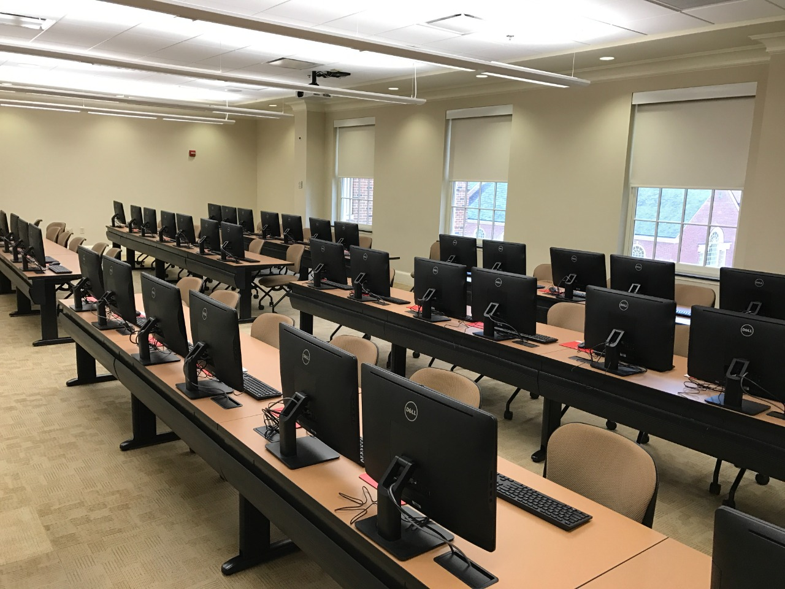

About Us
The Department of CSE was given status in 1983 and since then has been as one of the ranked colleges in the country.The Department has been providing several programmes in B.Tech, M.Tech and Ph.D programs
The Courses offered in the department meet the requirements of both industry and research. The faculty of the Department are actively engaged in research in the areas of Data & Knowledge Management, Software Engineering, Image Processing, Cryptography, Data Mining, and Artificial Intelligence
Different events and clubs are being organised every year and students have been gaining a lot of information from it.
Programs
Under graduate programmes:
- B.Tech in Computer Science and engineering
- B.Tech + M.Tech in Computer Science and Engineering (Intergrated program)
- B.Tech + B.Sc in Computer Science and Engineering (AU + BTH, Sweden [3+1])
- B.Tech + B.Sc in Computer Science and Engineering with spl. in Artificial Intelligence and Machine Learning (AU + BTH, Sweden [3+1])
Post graduate programmes:
- M.Tech in Computer Science and Technology
- M.Tech in Computer Science and Technology with spl. in Computer Network
- M.Tech in Computer Science and Technology with spl. in Artificial Intelligence and Robotics
Doctoral Programmes:
- Ph.D in CSE : Full Time
- Ph.D in CSE : Part Time
Labs
The CSE department at Andhra University has state-of-the-art labs equipped with the latest technology and software. Our labs include:
-

- Software Development Lab
- Networking Lab
- Database Lab
- Artificial Intelligence Lab
- Robotics Lab
- Hardware Lab
Infrastructure
Our department has modern classrooms and lecture halls equipped with projectors and interactive whiteboards. We also have a spacious library with a wide selection of books and journals related to computer science and engineering.
Events

Throughout the year, the CSE department hosts a variety of events including guest lectures, workshops, and conferences. Some of our recent events include:
- LinkedIn conference meet
- AU Alumni Meet
- Hackathon
- Web Development
- Quiz Competition
Placement companies
Every year student from our university are being placed in different software and IT comapnies with high packages. Students are placed in big comapnies like Microsoft, Intel, Google, Accenture, CISCO Systems, TCS, Infosys,etc.


Social media
If you want to get in touch with us, you can send us an email at head.cse@andhrauniversity.edu.in or at hodcsse.au@gmail.com or follow us on social media: